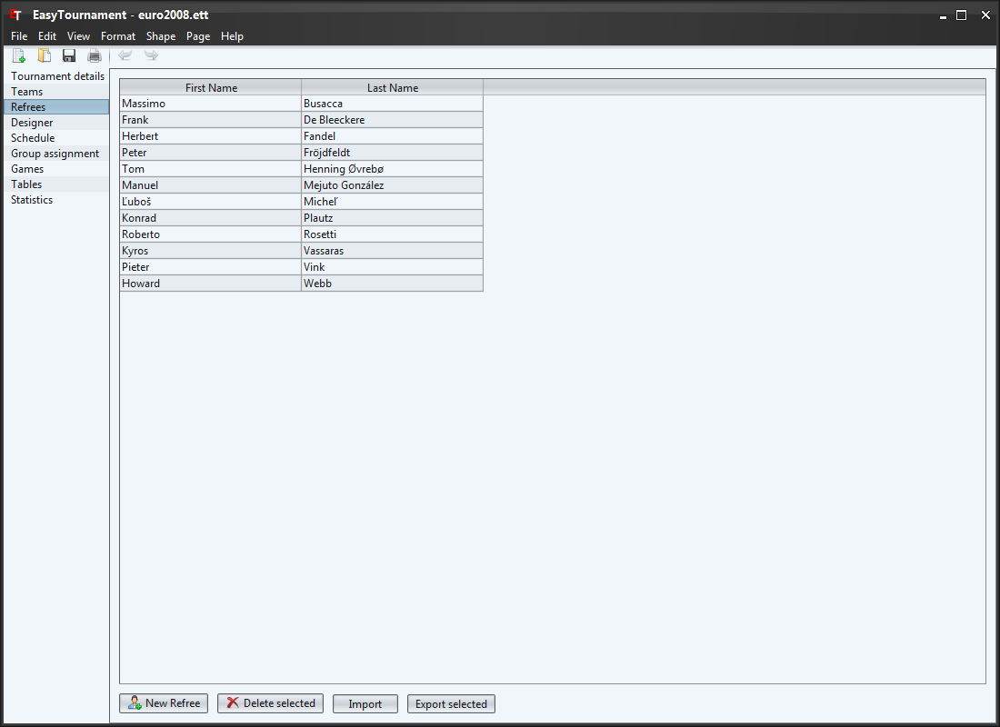
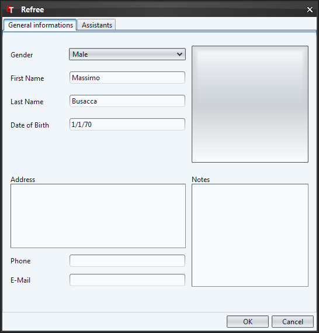
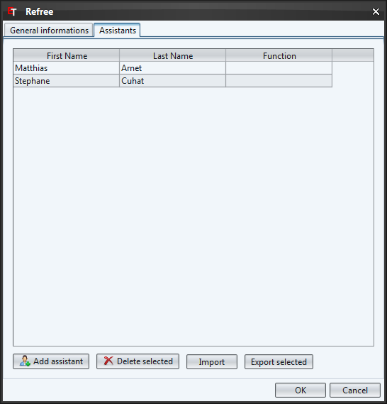

On this screen you are able to add refrees to the tournament. You can do this by clicking on the "New Refree" button or by selecting the corresponding entry in the context menu (right mouse button).
With a double-click on a refree or with the context menu you can edit a refree.
The button "Import" allows you to import refrees from another tournament.
Additionally you can save the refrees in an XML file to use them in another application. To do this you have to click on the "Export" button.

To select a logo for the refree you have to click on the squared button on the upper right side and choose the desired logo.
If you like to delete the logo, then click with the right mouse button on the logo and select the entry "Reset logo" in the context menu.

In the tab "Assistants" you are able to add some assistants to the refree. To do this you proceed exactly the same as with the refrees. Further details about the assistants you can get in the chapter Assistants.